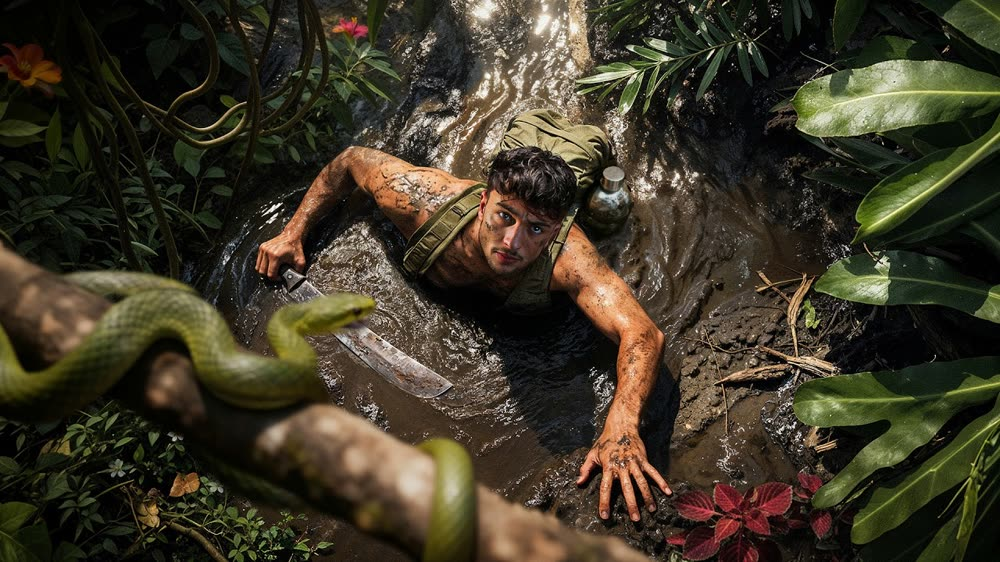
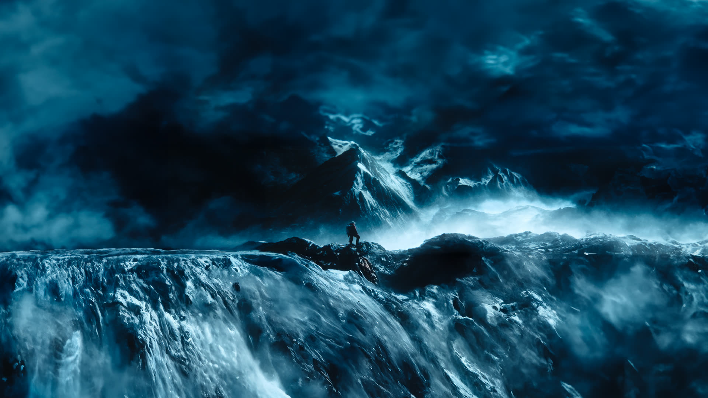
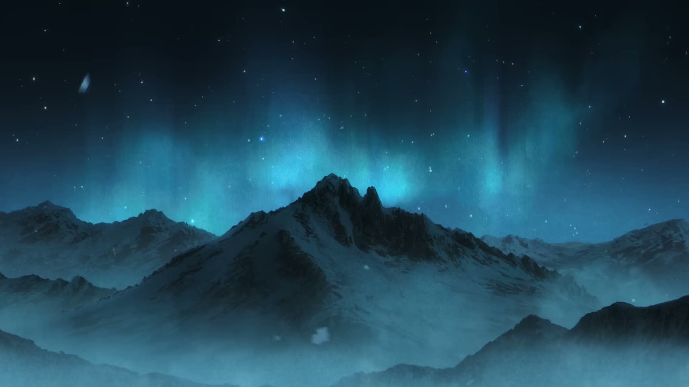
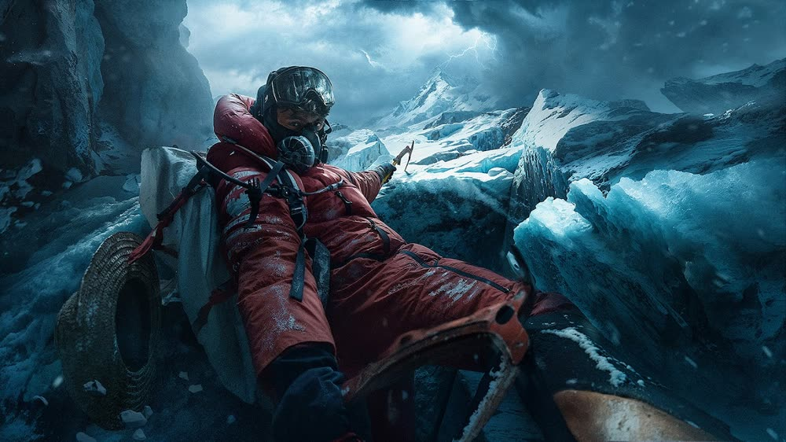
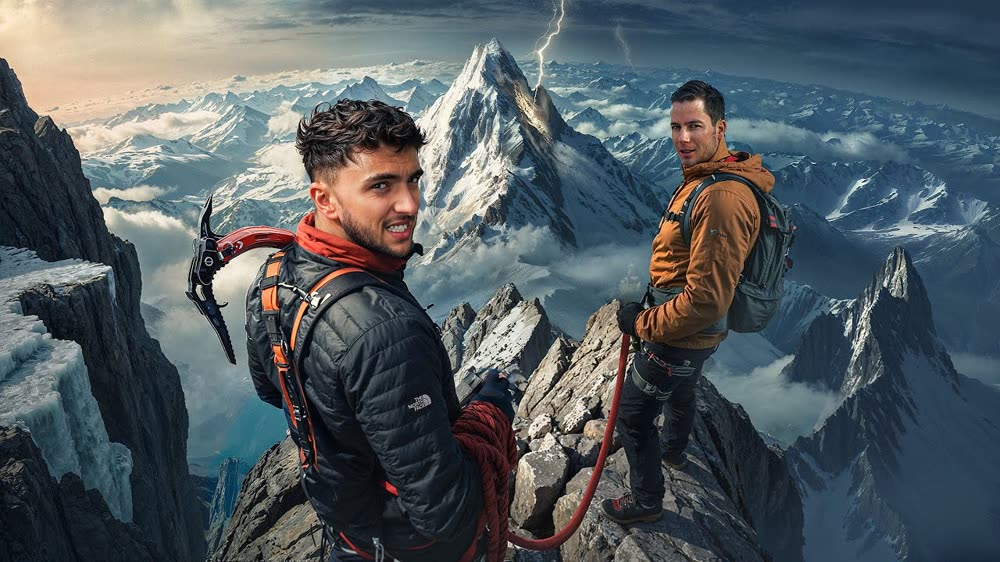
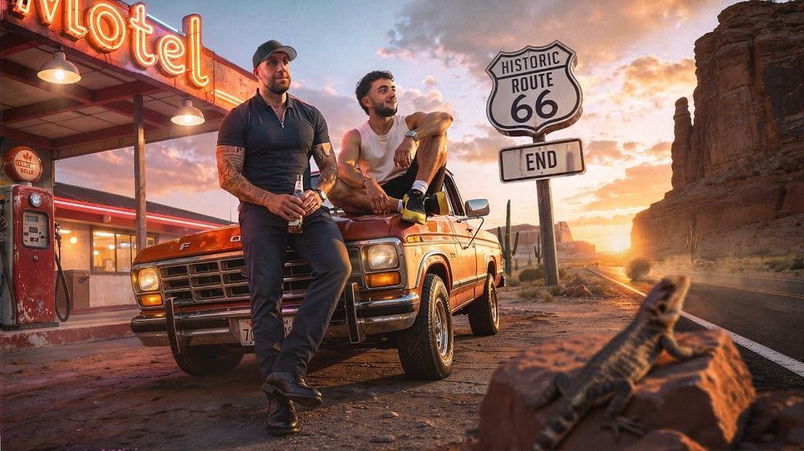
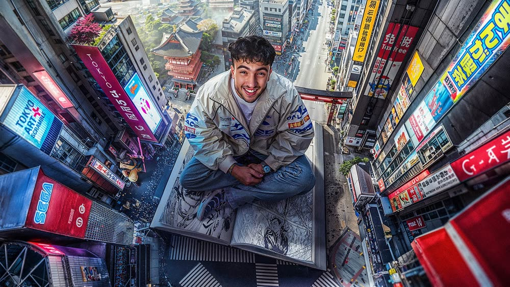
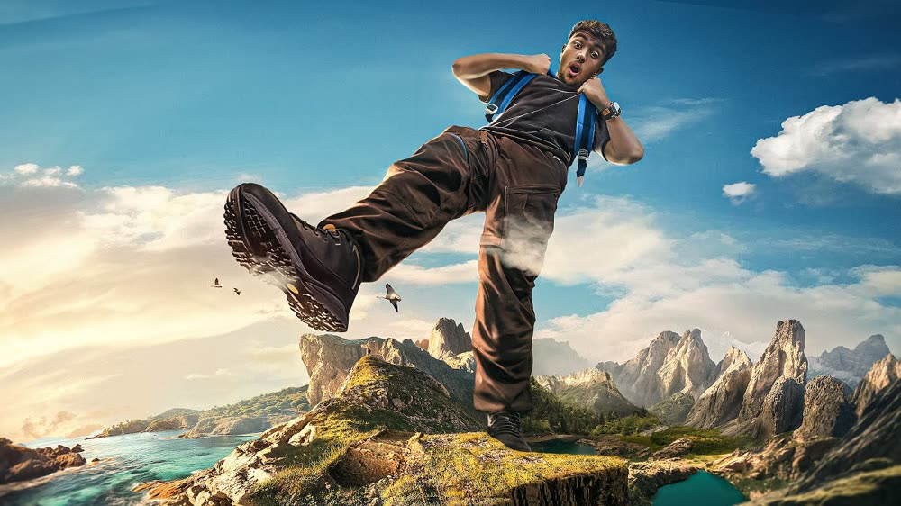

01


Inès Benazzouz / Créateur, France
改善 · Kaizen
Il n’avait jamais mis un crampon.
Un an plus tard, il posait le pied sur le toit du monde.
La voie népalaise

Le sommet n’est pas le but. Le chemin l’est.
Kaizen · 14 septembre 2024

KAIZEN : 1 an pour gravir l’EverestDepuis l’Everest





Faites glisser
L’audience